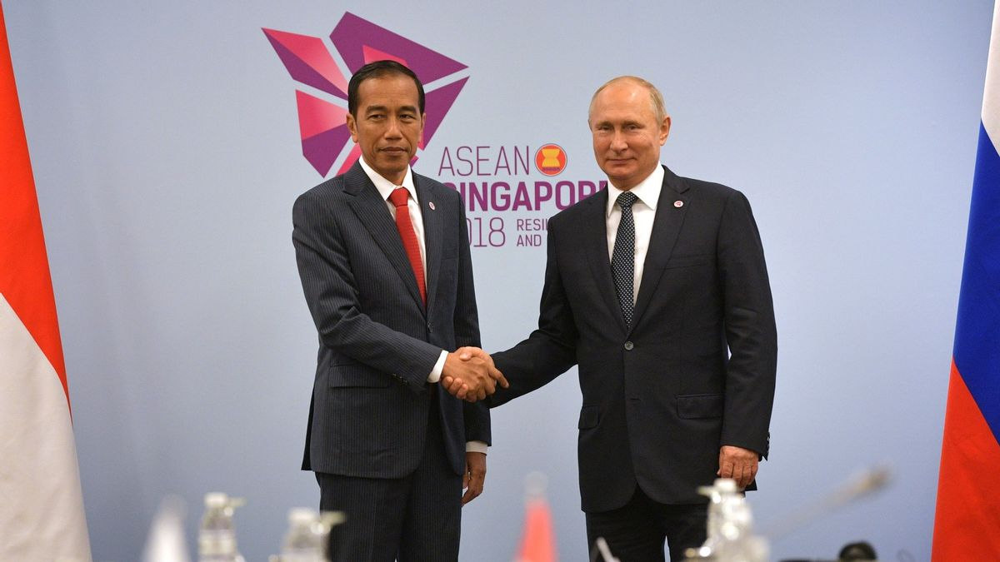
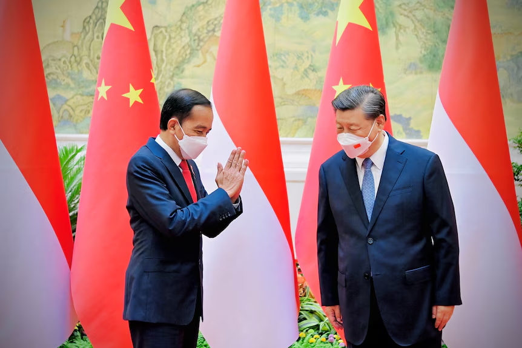
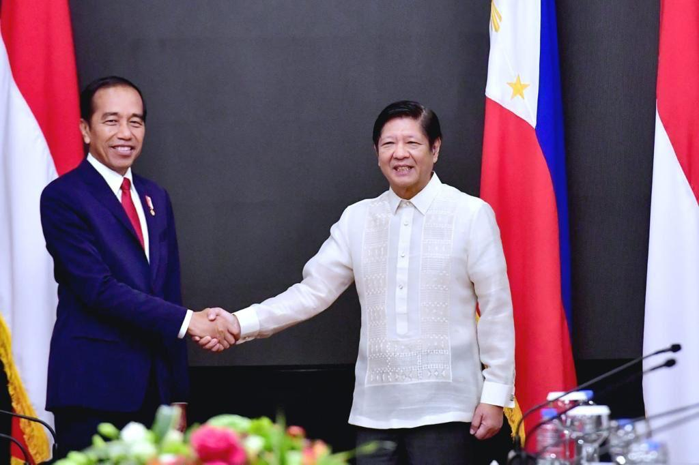

  
Indonesia adalah negara yang mempunyai pulau yang sangat banyak. Indonesia bisa dikenal sebagai negara kepulauan yang kaya akan sumber daya alam dan memiliki posisi strategis di Asia Tenggara. Karena letaknya sangat strategis, Indonesia sangatlah penting dalam menjalin hubungan internasional. Seiringnya berjalan waktu, Indonesia melakukan kerjasama dengan negara lain. Contohnya seperti Indonesia dengan Amerika Serikat untuk perjanjian kerja sama ekonomi pada tahun 1950. Saat ini, Indonesia telah menjalin kerjasama dengan 162 negara. Selain itu, kerja sama antara Indonesia dengan negara lain juga mendorong pengembangan sektor teknologi dan memberikan inovasi yang baru di Indonesia. Kolaborasi dengan negara-negara maju membuka peluang transfer teknologi, peningkatan kemampuan sumber daya manusia, dan pengembangan sektor industri berbasis teknologi. Tetapi, jika dipikirkan lagi, mengapa Indonesia mau dan melakukan kerjasama dengan negara lain? Kenapa Indonesia bekerja sama dengan 162 negara? Apa dampaknya jika Indonesia bekerja sama dengan negara lain?
Selain kerja sama di dalam bidang ekonomi, Indonesia juga bekerja sama dalam di bidang pendidikan dan kebudayaan. Itu juga sangat penting dalam membangun suatu hubungan yang baik dan damai dengan negara lain. Program pertukaran pelajar dan beasiswa di Indonesia dengan luar negeri dapat memberikan peluang pada generasi muda memperoleh pengetahuan dan mendapatkan pengalaman di luar negeri.